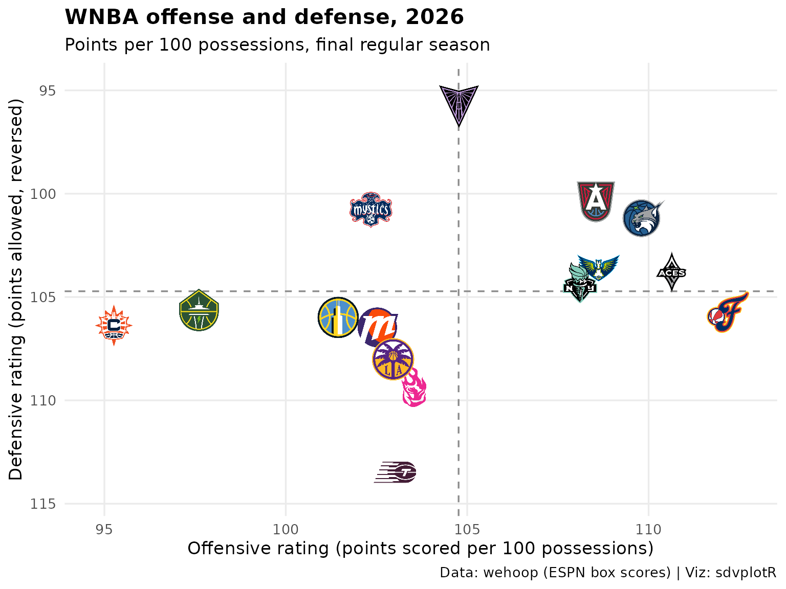

On this page
Updated 2026-10-09: the final 2026 regular season; the playoffs are under way.
This page is rebuilt every week with the site. It builds the standings with offensive, defensive and net ratings, plots offense against defense and lists the scoring leaders with their headshots, for the latest WNBA season with games: the season to date from May to September, the final regular season once it is over. Data: wehoop’s ESPN box scores, read from release files (no stats.wnba.com calls).
Picking the season
The WNBA season tips off in May, so until then the calendar points at
last season. wehoop::load_wnba_team_box() errors for a
season past wehoop’s most recent one, and a new season’s file can hold
only preseason games at first, so the helper treats “no regular-season
games” as “not published” and the page steps back one season. The status
line says what the numbers cover.
library(sdvplotR)
library(dplyr, warn.conflicts = FALSE)
library(ggplot2)
library(gt)
today <- Sys.Date()
day_label <- function(day, month = "%b") sub(" 0", " ", format(as.Date(day), paste(month, "%d"))) # "Oct 5"
# The season tips off in May, so until then the calendar points at last season
current <- as.integer(format(today, "%Y")) - (format(today, "%m") < "05")
# A season's team box scores, or NULL when it has no regular-season games yet:
# load_wnba_team_box() errors for a season past wehoop's most recent one, and a
# new season's file can hold only preseason games at first
team_games <- function(season) {
box <- tryCatch(suppressWarnings(wehoop::load_wnba_team_box(seasons = season)), error = function(e) NULL)
if (NROW(box) == 0 || !any(box$season_type == 2)) NULL else box
}
season <- current
box <- team_games(season)
if (is.null(box)) {
season <- current - 1
box <- team_games(season)
}
stopifnot(!is.null(box))
last_game <- max(box$game_date)
playoffs <- filter(box, season_type == 3)
if (season < current) {
status <- sprintf(
"the offseason, so this is the final %d regular season; the %d season has no games yet.",
season, current
)
through <- "final regular season"
} else if (nrow(playoffs) == 0) {
status <- sprintf("the %d season through %s.", season, day_label(last_game, "%B"))
through <- paste("through", day_label(last_game))
} else if (as.numeric(today - max(playoffs$game_date)) <= 10) {
status <- sprintf("the final %d regular season; the playoffs are under way.", season)
through <- "final regular season"
} else {
status <- sprintf("the offseason, so this is the final %d regular season.", season)
through <- "final regular season"
}ESPN files the All-Star Game and the Commissioner’s Cup final as
regular-season games, though neither counts in the standings; the
schedule marks them in type_abbreviation
(ALLSTAR, CC), so keep the standard games
(STD) only. That also drops the All-Star teams, whose
abbreviations are not franchises.
standard <- wehoop::load_wnba_schedule(seasons = season) |>
filter(season_type == 2, type_abbreviation == "STD")
stopifnot(identical(class(box$game_id), class(standard$game_id)))
games <- box |>
filter(season_type == 2, game_id %in% standard$game_id) |>
mutate(poss = field_goals_attempted - offensive_rebounds + total_turnovers +
0.44 * free_throws_attempted) |>
group_by(game_id) |>
mutate(poss = mean(poss, na.rm = TRUE)) |> # one side's box can miss a count; the other covers it
ungroup()
teams <- team_reference("wnba") |>
select(team = team_abbr, name = team_short_name, conference)
ratings <- games |>
arrange(game_date, game_id) |>
group_by(team = team_abbreviation) |>
summarise(
w = sum(team_winner), l = sum(!team_winner),
l10 = sum(tail(team_winner, 10)),
ortg = 100 * sum(team_score) / sum(poss),
drtg = 100 * sum(opponent_team_score) / sum(poss),
.groups = "drop"
) |>
mutate(pct = w / (w + l), net = ortg - drtg) |>
inner_join(teams, by = "team") |>
arrange(desc(pct), desc(net), team) # the team breaks a tie, so an unchanged week renders the same
nrow(ratings)
#> [1] 151. Standings with net rating
One table for the league, ordered by winning percentage (the WNBA
seeds its playoffs league-wide), with the conference beside each team
and its points scored and allowed per 100 possessions.
gt_color_pills() draws net rating on a scale centred at
zero.
standings <- ratings |>
mutate(
seed = row_number(),
record = paste(w, l, sep = "-"),
last10 = paste(l10, pmin(10, w + l) - l10, sep = "-"),
logo = team
) |>
select(seed, logo, name, conference, record, pct, last10, ortg, drtg, net)
standings |>
gt(id = "wnba-standings") |>
tab_header(
title = paste("WNBA standings and ratings,", season),
subtitle = paste0(toupper(substr(through, 1, 1)), substring(through, 2))
) |>
fmt_number(pct, decimals = 3) |>
fmt_number(c(ortg, drtg), decimals = 1) |>
tab_spanner("Per 100 possessions", c(ortg, drtg, net)) |>
cols_label(
seed = "", logo = "", name = "Team", conference = "Conf", record = "W-L",
pct = "Pct", last10 = "Last 10", ortg = "Off", drtg = "Def", net = "Net"
) |>
tab_source_note(paste(
"Data: wehoop (ESPN box scores). Possessions estimated from the box score;",
"ties ordered by net rating. Viz: sdvplotR"
)) |>
gt_color_pills(
net,
palette = c("#c84630", "#f7f7f7", "#2e8b57"),
domain = c(-1, 1) * max(abs(standings$net)), digits = 1, pill_height = 22
) |>
gt_sdv_logos(columns = logo, sport = "wnba", height = 26) |>
gt_theme_pl()| WNBA standings and ratings, 2026 | |||||||||
| Final regular season | |||||||||
| Team | Conf | W-L | Pct | Last 10 |
Per 100 possessions
|
||||
|---|---|---|---|---|---|---|---|---|---|
| Off | Def | Net | |||||||
| 1 |  |
Lynx | Western | 33-11 | 0.750 | 6-4 | 109.9 | 101.2 | 8.7 |
| 2 |  |
Valkyries | Western | 32-12 | 0.727 | 7-3 | 104.8 | 95.8 | 9.0 |
| 3 |  |
Aces | Western | 31-13 | 0.705 | 8-2 | 110.6 | 103.8 | 6.8 |
| 4 |  |
Dream | Eastern | 30-14 | 0.682 | 9-1 | 108.5 | 100.4 | 8.2 |
| 5 |  |
Fever | Eastern | 28-16 | 0.636 | 6-4 | 112.2 | 105.7 | 6.5 |
| 6 |  |
Mystics | Eastern | 28-16 | 0.636 | 8-2 | 102.3 | 100.8 | 1.6 |
| 7 |  |
Wings | Western | 27-17 | 0.614 | 7-3 | 108.6 | 103.6 | 5.0 |
| 8 |  |
Liberty | Eastern | 26-18 | 0.591 | 6-4 | 108.1 | 104.3 | 3.8 |
| 9 |  |
Fire | Western | 17-27 | 0.386 | 3-7 | 103.5 | 109.3 | -5.8 |
| 10 |  |
Mercury | Western | 16-28 | 0.364 | 4-6 | 102.5 | 106.5 | -3.9 |
| 11 |  |
Sky | Eastern | 16-28 | 0.364 | 4-6 | 101.4 | 106.0 | -4.5 |
| 12 |  |
Sparks | Western | 16-28 | 0.364 | 4-6 | 103.0 | 108.0 | -5.1 |
| 13 |  |
Tempo | Eastern | 11-33 | 0.250 | 1-9 | 103.0 | 113.5 | -10.5 |
| 14 |  |
Sun | Eastern | 11-33 | 0.250 | 2-8 | 95.3 | 106.4 | -11.1 |
| 15 |  |
Storm | Western | 8-36 | 0.182 | 2-8 | 97.6 | 105.6 | -8.0 |
| Data: wehoop (ESPN box scores). Possessions estimated from the box score; ties ordered by net rating. Viz: sdvplotR | |||||||||
2. Offense against defense
Points scored per 100 possessions against points allowed, one logo per team. The y axis is reversed so the better defenses sit higher, and the faint diagonals are lines of equal net rating, five points apart.
ggplot(ratings, aes(x = ortg, y = drtg)) +
geom_abline(slope = 1, intercept = seq(-30, 30, by = 5), colour = "grey88", linewidth = 0.3) +
geom_hline(yintercept = mean(ratings$drtg), linetype = "dashed", colour = "grey55") +
geom_vline(xintercept = mean(ratings$ortg), linetype = "dashed", colour = "grey55") +
geom_sdv_logos(aes(team = team), sport = "wnba", width = 0.065) +
# logos do not widen the limits, so leave room for the outermost ones
scale_x_continuous(expand = expansion(mult = 0.08)) +
scale_y_reverse(expand = expansion(mult = 0.12)) +
labs(
title = paste("WNBA offense and defense,", season),
subtitle = paste("Points per 100 possessions,", through),
x = "Offensive rating (points scored per 100 possessions)",
y = "Defensive rating (points allowed, reversed)",
caption = "Data: wehoop (ESPN box scores) | Viz: sdvplotR"
) +
theme_minimal(base_size = 13) +
theme(plot.title = element_text(face = "bold"), panel.grid.minor = element_blank())
3. Scoring leaders with headshots
Points per game from the player box scores (standard games only), for
players who appeared in at least half of the most games any team has
played. ESPN athlete ids are sdvplotR’s default id for WNBA headshots,
and the table is dressed in the scoring leader’s team colors by
gt_theme_sdv_team().
players <- wehoop::load_wnba_player_box(seasons = season) |>
filter(season_type == 2, !did_not_play, !is.na(minutes), game_id %in% standard$game_id)
most_games <- max(count(distinct(players, team_abbreviation, game_id), team_abbreviation)$n)
leaders <- players |>
arrange(game_date, game_id) |>
group_by(athlete_id) |>
summarise(
name = last(athlete_display_name), team = last(team_abbreviation), gp = n(),
ppg = mean(points), rpg = mean(rebounds), apg = mean(assists),
fg_pct = sum(field_goals_made) / sum(field_goals_attempted),
.groups = "drop"
) |>
filter(gp >= most_games / 2) |>
arrange(desc(ppg), athlete_id) |>
slice_head(n = 10) |>
mutate(rank = row_number(), headshot = athlete_id, logo = team)
head(leaders)
#> # A tibble: 6 × 11
#> athlete_id name team gp ppg rpg apg fg_pct rank headshot logo
#> <int> <chr> <chr> <int> <dbl> <dbl> <dbl> <dbl> <int> <int> <chr>
#> 1 3149391 A'ja Wil… LV 41 26.2 9.37 3.22 0.527 1 3149391 LV
#> 2 3142191 Kelsey M… IND 44 24.7 1.70 2.75 0.509 2 3142191 IND
#> 3 4433403 Caitlin … IND 40 22.3 3.95 8.32 0.445 3 4433403 IND
#> 4 2998938 Kahleah … PHX 40 21.5 3.68 1.88 0.449 4 2998938 PHX
#> 5 4433730 Paige Bu… DAL 42 20.9 4.14 5.88 0.512 5 4433730 DAL
#> 6 3904576 Marina M… TOR 32 20.8 3.28 3.69 0.441 6 3904576 TOR
leaders |>
select(rank, headshot, name, logo, gp, ppg, rpg, apg, fg_pct) |>
gt(id = "wnba-leaders") |>
tab_header(
title = paste("WNBA scoring leaders,", season),
subtitle = paste0(
"Points per game, minimum ", ceiling(most_games / 2), " games, ", through
)
) |>
fmt_number(c(ppg, rpg, apg), decimals = 1) |>
fmt_percent(fg_pct, decimals = 1) |>
cols_label(
rank = "", headshot = "", name = "Player", logo = "", gp = "GP",
ppg = "PTS", rpg = "REB", apg = "AST", fg_pct = "FG%"
) |>
tab_source_note("Data: wehoop (ESPN box scores) | Viz: sdvplotR") |>
gt_sdv_headshots(columns = headshot, sport = "wnba", height = 40) |>
gt_sdv_logos(columns = logo, sport = "wnba", height = 26) |>
gt_theme_sdv_team(team = leaders$team[1], sport = "wnba")| WNBA scoring leaders, 2026 | ||||||||
| Points per game, minimum 22 games, final regular season | ||||||||
| Player | GP | PTS | REB | AST | FG% | |||
|---|---|---|---|---|---|---|---|---|
| 1 |  |
A'ja Wilson | |
41 | 26.2 | 9.4 | 3.2 | 52.7% |
| 2 |  |
Kelsey Mitchell | |
44 | 24.7 | 1.7 | 2.8 | 50.9% |
| 3 |  |
Caitlin Clark | |
40 | 22.3 | 4.0 | 8.3 | 44.5% |
| 4 |  |
Kahleah Copper | |
40 | 21.5 | 3.7 | 1.9 | 44.9% |
| 5 |  |
Paige Bueckers | |
42 | 20.9 | 4.1 | 5.9 | 51.2% |
| 6 |  |
Marina Mabrey | |
32 | 20.8 | 3.3 | 3.7 | 44.1% |
| 7 |  |
Breanna Stewart | |
42 | 20.8 | 8.3 | 3.3 | 47.4% |
| 8 |  |
Olivia Miles | |
40 | 19.8 | 4.7 | 6.0 | 49.2% |
| 9 |  |
Allisha Gray | |
44 | 19.0 | 3.5 | 2.6 | 46.2% |
| 10 |  |
Jackie Young | |
43 | 18.9 | 4.4 | 6.8 | 48.8% |
| Data: wehoop (ESPN box scores) | Viz: sdvplotR | ||||||||
Related
- WNBA walks through wehoop and sdvplotR more broadly.
- NBA builds the same standings from hoopR.
- Social graphics, automated posts leaderboards like these on a schedule.